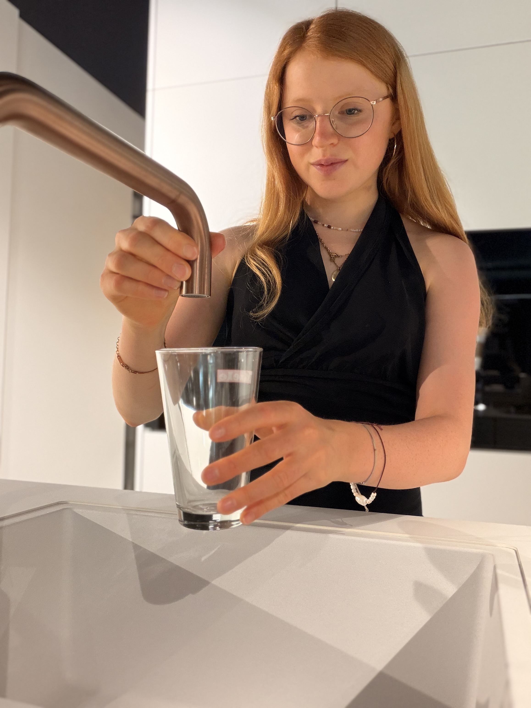
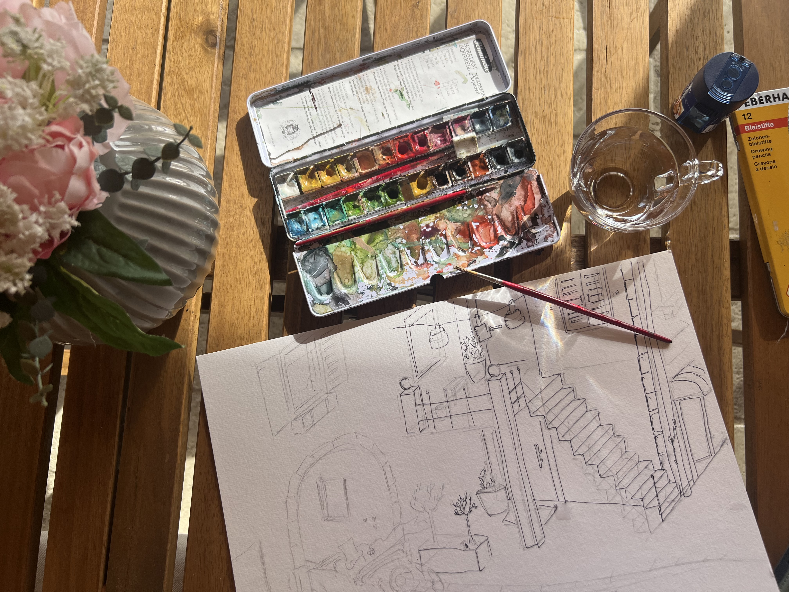

Julia · Augsburg
Was ich gelernt habe.
Woher mein Wissen kommt.
Und was mich antreibt.
Formale Ausbildung ist nur ein Teil.
Der Rest kommt aus echter Praxis.
Design-Grundlagen von Grund auf.
Typografie, Layout, Bildsprache, Farbtheorie.
Der Boden, auf dem alles andere steht.
Videoschnitt, Copywriting, Marketing, App-Development.
Alles selbst beigebracht durch Bauen, Testen und Beobachten.
Kein Zertifikat, aber täglicher Beweis in echten Projekten.
Von der ersten Kundin bis zur laufenden Agentur.
Ich lerne bei jeder Marke etwas Neues über ihre Branche.
Diese Vielfalt fließt zurück in jedes neue Projekt.
Eigene App entwickelt für Frauen mit Histaminintoleranz.
App-Development, User-Research, Community-Aufbau.
Vom Konzept bis Store-Launch.
Nicht aus Kursen und Zertifikaten. Aus dem, was ich täglich selbst mache.

Aus der Praxis
706.000 erreichte Konten und 1,77 Mio. Reel-Aufrufe pro Monat auf @Julia_Bergles.
Ich weiß, was 2026 auf Instagram funktioniert.
Weil ich es täglich selbst mache.
Eigene App gebaut, gelaunched, betrieben.
Ich verstehe, wie man Produkte für eine Nische entwickelt.
Dieses Denken bringt Marken einen anderen Blick auf ihre Kunden.
Selbst Histaminintoleranz.
Ich kenne Health-Themen aus zwei Blickwinkeln: als Content-Creator und als Nutzerin.
Das führt zu Content, der echt klingt.
Jeder Beitrag ist ein Experiment.
Ich sehe live, was Reichweite bringt und was nicht.
Dieses Wissen fließt direkt in Ihren Content.
Keine versteckten Kosten.
Kein Bullshit-Bingo im Angebot.
Sie wissen, was Sie bekommen und was es kostet.
Kein KI-Ton, kein Baukasten-Look.
Marken haben eine Stimme.
Meine Aufgabe ist, sie klar hören zu lassen.
Ich arbeite mit wenigen Marken gleichzeitig.
Damit ich jede so gut betreue, wie sie es verdient.
Deshalb: nur eine Marke pro Branche und Region.
30 Minuten Kennenlerngespräch.
Kostenlos und unverbindlich.